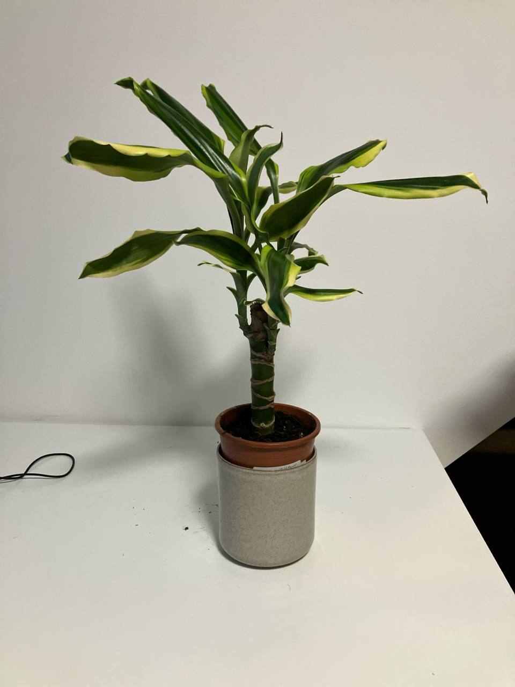

Activity
- Scheduled
- Feeding 03-09-2024
- Repot 03-08-2026
Dracaena Plant Care Guide
Environment
Light
- Indirect Light: Dracaenas prefer bright, indirect light but can tolerate lower light conditions. Avoid direct sunlight, which can cause leaf burn.
Soil
- Well-Draining Soil: Use a potting mix that drains well, such as a mixture of regular potting soil with added perlite or sand.
Temperature
- Ideal Temperatures: Dracaenas thrive in temperatures between 60-75°F (15-24°C). They are sensitive to cold and should be kept away from drafts.
Routine jobs
Watering
- Watering Schedule: Water Dracaenas when the top inch of soil feels dry. Overwatering can lead to root rot, so ensure the soil is well-draining.
- Humidity: Dracaenas prefer moderate humidity. If the air is very dry, consider misting the leaves occasionally.
Feeding
- Fertilization: Feed Dracaenas every 4-6 weeks during the growing season (spring and summer) with a balanced liquid fertilizer diluted to half strength.
Potting
- Container Choice: Choose a pot with drainage holes to prevent water from accumulating at the bottom. Dracaenas do well in relatively small pots.
- Repotting: Repot every 2-3 years or when the plant outgrows its container. Refresh the soil to provide new nutrients.
Troubleshooting
- Common Pests: Watch for pests like spider mites, mealybugs, and scale. Treat infestations with insecticidal soap or neem oil.
- Leaf Care: Remove any yellow or brown leaves to keep the plant healthy. Ensure proper watering to avoid leaf discoloration.
Propagation
- Propagation Methods: Dracaenas can be propagated by stem cuttings. Cut a healthy stem and plant it in moist potting soil. Keep the soil moist until new growth appears.